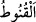

Teâlâ: “Şüphesiz Allah kendisine ortak koşulması dışındaki tüm günahları dilediği
kimselere bağışlar.” (en-Nisâ, 4/116) âyetini indirdi. Bu ayetin indirildiğini öğrenen
Vahşî bu sefer de “Ben Allah’ın dilediği kimselerden olamamaktan endişe ediyorum.”
dedi. Ardından Allah Teâlâ: “De ki: Ey kendi nefisleri aleyhine haddi aşan kullarım!
Allah’ın rahmetinden ümit kesmeyin…” âyetini indirdi. Ancak bundan sonra ki Vahşî
Hz. Peygamber (s.a.)’e müteveccihen yola çıktı ve müslüman oldu.”[130]
Her hâlükârda âyetin böyle husûsî bir sebep üzerine inmiş olması, lâfzın (hükmün)
umûmî oluşunu ortadan kaldırmaz. Dolayısıyla haddi aşan herkes bu âyetin kapsamına
girer.
“Allah’ın rahmetinden ümid kesmeyin!”
“ ümitsizliğin en büyüğüdür. el-Müfredât’ta ise “Hayırlı bir şeyden ümid
kesmek demektir.” der.
Allah Teâlâ’dan olan rahmet, nimetlendirmek, lütuf ve ihsanda bulunmak demektir. Bu
ise varlık sahnesine çıkış sırası îtibariyle mağfiretten sonradır. Mağfiret ise Allah’ın
kulunu azâbın değmesinden koruması demektir. “Şüphesiz ki O, çok bağışlayan, çok
esirgeyendir.” ifâdesi de buna delâlet eder. Bu sebeple bu ifâdeye şöyle mânâ
verilmiştir: O’nun öncelikle mağfiretinden, ikinci olarak da fazl u kereminden ümid
kesmeyin.
Ümitsiz olma, çünkü ümitsizlik küfürdür.
Meâlimü’t-Tenzîl’de der ki: “İbn Mes’ûd (r.a.) mescide girdi; vâiz, cehennem ateşi,
zincirler ve prangalardan bahsediyordu. İbn Mes’ûd (r.a.) ona: “Niçin insanları
ümitsizliğe sevkediyorsun? Yoksa “De ki: Ey kendi nefisleri aleyhine haddi aşan
kullarım! Allah’ın rahmetinden ümit kesmeyin!” âyetini okumadın mı?” diye sordu.
Bilesin ki Allah’ın rahmetinden ümit kesmek, Hak ile kul arasındaki vuslatın/bağın
kopması sûretiyle kulun istîdâdının yok olduğunu ve fıtrattan uzaklaştığını gösterir.
Çünkü kulda, aslî nurundan bir şey bile kalmış olsa, Allah’ın o geniş, o gazabından önce
gelen rahmetinin izi ona yetişir. İşte haddi aşıp Allah’a karşı aşırı gitmiş olsa da, bu
‘iz’in kendisine ulaşmasını ümid etmesi, söz konusu nur artığı sâyesinde nur âlemiyle
bağlantılı olmasından kaynaklanmaktadır. Ümitsizlik ise kişinin tamamen perdelenmiş,
yüzünün tamamen kararmış olduğunu gösterir. İşte tevhîd nurunun kalpte kalması şartıyla
Allah Teâlâ bütün günahları bağışlar. Bu nur kalmayınca “Allah kendisine ortak
koşulmasını asla bağışlamaz!” (en-Nisâ, 4/48) âyetinin hükmüne dâhil olur. Şu halde
ümitsizlik en büyük musîbetlerden biridir. Allah fazl u kereminden olarak kullarına son
nefeslerine kadar mühlet vermiştir. Kul son nefesten evvel dönecek olsa o da kabul
edilir.
“Çünkü Allah bütün günahları bağışlar.” Sanki ‘Rahmetten ümit kesmenin
yasaklanmasının sebebi nedir?’ diye bir soru sorulmuş ve bu yasaklamanın sebebinin
Allah Teâlâ’nın dilediği kimseler için genel bir azab veya dilediği şekilde başka bir
cezâdan bir müddet sonra bütün günahları bağışlaması olduğu cevabı verilmiştir.